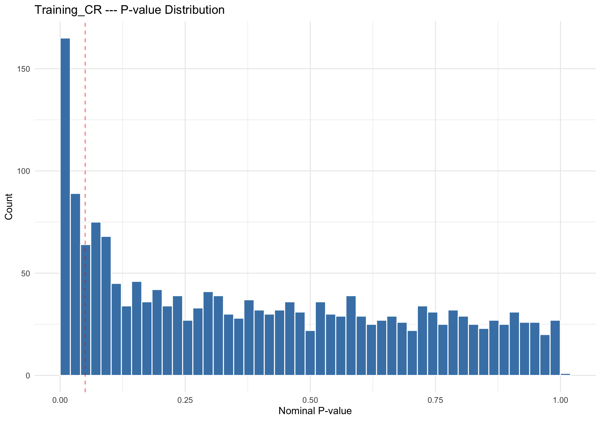
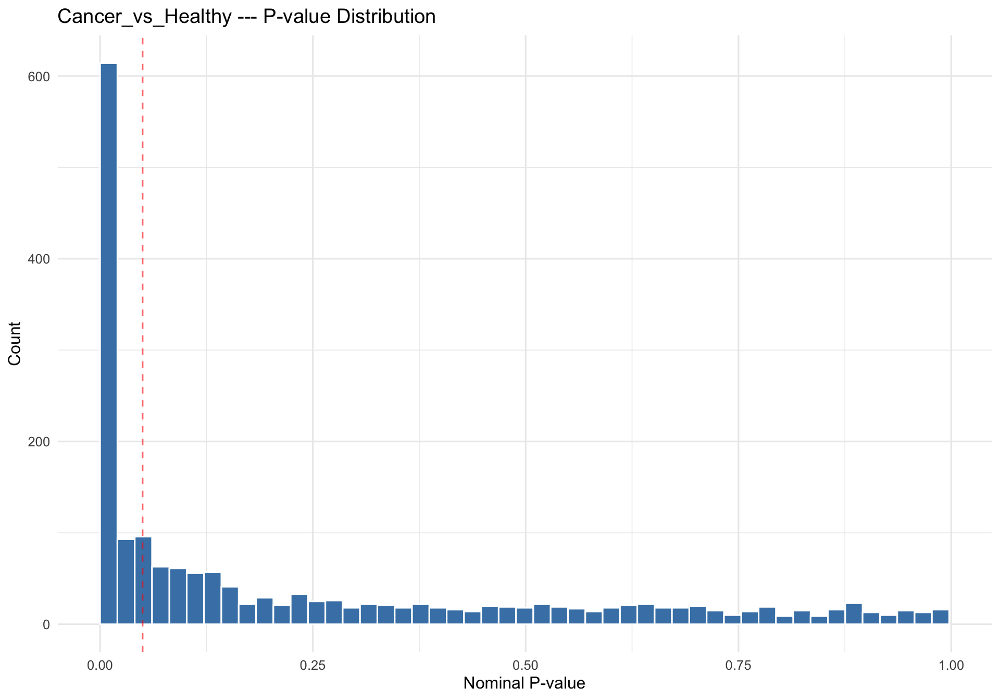
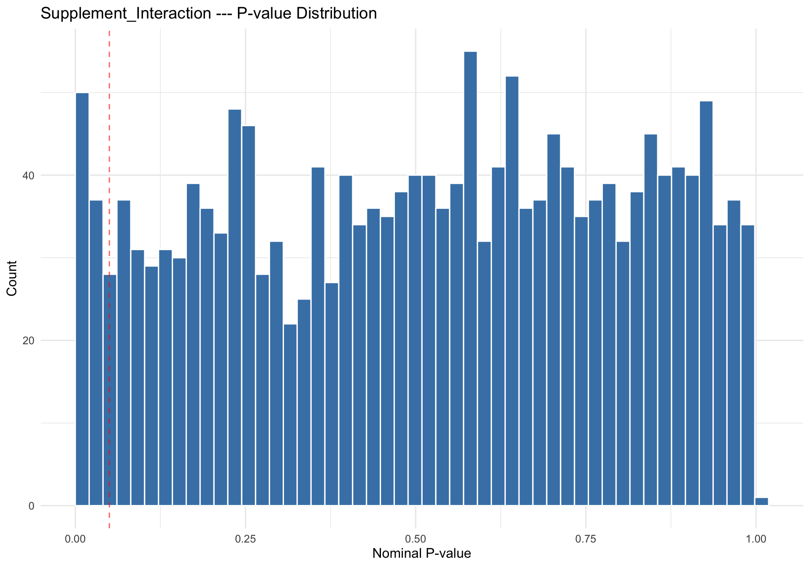

1 — Introduction: Differential Expression in Proteomics
Differential expression analysis in proteomics (DEP) identifies proteins whose abundance differs systematically between experimental conditions. Unlike simple fold-change filtering, formal statistical testing accounts for measurement variability across biological replicates and controls the rate of false discoveries when thousands of proteins are tested simultaneously. The goal is to move beyond descriptive abundance profiles toward rigorous inference about which proteins respond to the conditions under study.
In the context of label-free quantitative proteomics, each protein’s measured intensity is subject to multiple sources of variation: biological variability between subjects, technical variability from sample preparation and LC-MS acquisition, and the stochastic nature of data-dependent or data-independent acquisition. A sound statistical framework must model these sources explicitly rather than treating the data as if each protein were measured in isolation.
The limma framework (Ritchie et al., 2015) has become the dominant approach for small-sample proteomics experiments because it stabilizes variance estimates through empirical Bayes shrinkage. Rather than estimating a variance for each protein independently—an unreliable procedure when only a handful of replicates are available—limma borrows information across all proteins to produce a moderated variance estimate. This shrinkage pulls extreme per-protein variances toward a common prior, yielding more stable test statistics and substantially greater power to detect true differences (Smyth, 2004).
An alternative framework, DEqMS (Zhu et al., 2020), extends limma by modeling the relationship between variance and peptide count. In proteomics, proteins identified by more peptides tend to have more precise quantification, and DEqMS leverages this relationship to produce count-specific variance priors. However, DEqMS requires a complete data matrix—it cannot accommodate missing values because the peptide-count-to-variance relationship breaks down when some samples lack measurements entirely. This distinction drives the pipeline’s automatic method selection.
The present analysis uses the non-imputed data pathway, selected on the basis of the sensitivity analysis conducted in the preceding analysis step. Because the cycloess-normalized data retains its natural missingness pattern, the pipeline selects limma as the appropriate engine. This choice preserves the biological reality that low-abundance proteins in certain conditions are genuinely below the detection limit, rather than filling in synthetic values that could bias fold-change estimates.
The limma pipeline applied here incorporates three layers of robustness beyond the standard empirical Bayes framework: sample-level quality weighting via arrayWeights, within-subject correlation modeling via duplicateCorrelation, and outlier-robust hyperparameter estimation via eBayes(robust = TRUE). These three mechanisms operate at different levels—sample, design, and protein—and together produce a model that is well-suited to the challenges of this dataset.
This document presents the results of the differential expression analysis. All computations were performed by the companion R script (CvH_DEP.R); this narrative reads the output files and presents them with scientific context and interpretation.
The sections that follow describe the biological questions encoded as contrasts, the statistical model and its justification, the results for each contrast, and the multi-criteria significance framework used to interpret findings from both well-powered and underpowered comparisons.
2 — Study Contrasts: Biological Questions
The study examines skeletal muscle proteome remodeling in cancer survivors undergoing resistance training, with a secondary question about whether creatine supplementation modifies that response. Cancer survivors (CR) who had completed primary treatment were randomized to receive either creatine (CRE) or placebo (PLA) during a 12-week progressive resistance training program. Vastus lateralis biopsies were collected at baseline (T1) and post-training (T2). A separate group of healthy age-matched controls (PPS) provided a single baseline biopsy for comparison.
Three contrasts capture the study’s central hypotheses. Each is defined as a linear combination of group means from the five-level factor (CRE_T1, CRE_T2, PLA_T1, PLA_T2, H_T1) used in the design matrix.
Training_CR = (CRE_T2 + PLA_T2)/2 – (CRE_T1 + PLA_T1)/2. This contrast asks whether 12 weeks of resistance training changes the skeletal muscle proteome in cancer survivors. By averaging across supplement groups, it isolates the main effect of training, pooling both CRE and PLA arms to maximize statistical power. Any protein whose abundance shifts from T1 to T2—regardless of whether the subject received creatine or placebo—will be detected by this contrast.
Cancer_vs_Healthy = (CRE_T1 + PLA_T1)/2 – H_T1. This contrast compares the baseline muscle proteome of cancer survivors with that of healthy controls. Only baseline timepoints are used, ensuring that the comparison reflects the pre-training state. Because this contrast captures fundamental biological differences between cancer survivors and healthy individuals—differences shaped by the disease itself, prior treatments (chemotherapy, radiation), and associated deconditioning—it is expected to yield the strongest signal among the three comparisons.
Supplement_Interaction = (CRE_T2 – CRE_T1) – (PLA_T2 – PLA_T1). This interaction contrast tests whether creatine supplementation modifies the training response differently than placebo. It compares the within-subject change in the CRE arm against the within-subject change in the PLA arm. A significant result would indicate that the proteome-level training adaptation depends on supplement assignment. This is the most demanding contrast statistically, as it requires detecting a difference of differences with approximately 8 subjects per supplement group.
These three contrasts were chosen to address the study’s primary aims comprehensively. The Training_CR contrast addresses the rehabilitation question (does exercise help?), the Cancer_vs_Healthy contrast quantifies the deficit (how different are cancer survivors?), and the Supplement_Interaction contrast evaluates the nutritional intervention (does creatine add benefit?). Together they span the study’s biological scope from descriptive comparison to mechanistic interaction.
The contrast definitions are encoded in the design matrix and passed to limma’s contrasts.fit function, which re-parameterizes the fitted coefficients to test each linear combination. Importantly, all three contrasts are tested from the same model fit, ensuring consistent variance estimation across comparisons.
3 — Statistical Model: Three Layers of Robustness
The differential expression model used here extends the standard limma pipeline with three complementary robustness mechanisms. Each addresses a distinct source of heterogeneity: arrayWeights handles sample-level quality variation, duplicateCorrelation handles within-subject correlation from the paired design, and eBayes(robust = TRUE) handles protein-level variance outliers. Understanding why each is necessary requires considering the specific challenges of this dataset.
Not all samples contribute equally to the analysis. Variation in biopsy quality, protein extraction efficiency, and LC-MS performance means that some samples are inherently noisier than others. The traditional approach is to identify and remove outlier samples, but this discards potentially informative data and requires arbitrary threshold decisions.
arrayWeights (Ritchie et al., 2006) provides a principled alternative. It estimates a quality weight for each sample by fitting a heterogeneous error model: samples with higher residual variance receive lower weights, while cleaner samples receive higher weights. This weighting is incorporated into all subsequent model fitting, so noisy samples contribute less to coefficient estimates without being removed entirely. The approach is analogous to weighted least squares in classical regression, but the weights are estimated from the data rather than specified a priori.
Liu et al. (2015) demonstrated that sample-level weighting substantially improves power in RNA-seq analyses, and the same principle applies to proteomics data where sample quality variation is often more pronounced due to the complexity of the LC-MS workflow. In the present dataset, array weights ranged from well below 1.0 (downweighted samples) to above 2.0 (upweighted samples), confirming meaningful quality heterogeneity across the cohort.
Show code
aw <-read_csv(file.path(data_dir, "array_weights.csv"), show_col_types =FALSE)cat(sprintf("Array weights: min = %.3f, median = %.3f, max = %.3f\n",min(aw$array_weight), median(aw$array_weight), max(aw$array_weight)))
Array weights: min = 0.107, median = 1.165, max = 3.344
Show code
ggplot(aw, aes(x =reorder(sample_id, array_weight), y = array_weight)) +geom_point(size =2.5, color ="steelblue") +geom_hline(yintercept =1, linetype ="dashed", color ="gray40") +coord_flip() +labs(x =NULL, y ="Array Weight",title ="Sample-Level Quality Weights (arrayWeights)") +theme_minimal(base_size =11)
Cancer survivor participants contributed two biopsies each (T1 and T2), creating a paired design. Measurements from the same individual are correlated—if a subject has generally higher protein abundances at T1, they tend to have generally higher abundances at T2 as well. Ignoring this correlation inflates the residual variance and reduces power, because the model attributes within-subject consistency to random error rather than to the paired structure.
The duplicateCorrelation function estimates a consensus within-subject correlation across all proteins. This single parameter captures the average degree to which repeated measurements on the same subject co-vary. The estimated correlation is then incorporated into the linear model via generalized least squares, properly accounting for the non-independence of paired observations.
This is particularly important for the Training_CR and Supplement_Interaction contrasts, both of which compare T1 and T2 measurements within the same subjects. Without duplicateCorrelation, the effective sample size for these within-subject contrasts would be underestimated, and the test would be conservative. The Cancer_vs_Healthy contrast, which compares independent groups, benefits less directly but still gains from the improved overall variance estimation.
The consensus correlation estimated by the pipeline reflects the proportion of total variance attributable to between-subject differences versus within-subject (residual) variation. A high correlation indicates that subjects differ substantially from each other but are internally consistent across timepoints, which is favorable for paired analyses.
Standard empirical Bayes moderation (Smyth, 2004) assumes that all proteins share a common prior variance distribution. The moderated t-statistic borrows strength across proteins by shrinking each protein’s variance toward this shared prior. However, a subset of proteins with unusually high or low variance—hypervariable proteins—can distort the prior estimate, pulling it away from the majority and degrading the shrinkage for well-behaved proteins.
The robust option in eBayes (Phipson et al., 2016) addresses this by using a robust estimator for the hyperparameters of the prior distribution. Specifically, it downweights proteins whose observed variance is far from the fitted prior, preventing a few outliers from corrupting the shrinkage applied to the majority. This is especially relevant in proteomics, where blood contamination proteins (hemoglobins, serum albumin) or highly variable structural proteins can exhibit variances orders of magnitude larger than typical proteins.
The robust approach does not remove hypervariable proteins from the analysis; rather, it limits their influence on the shared prior while still testing them individually. This is preferable to manual exclusion because it is data-driven, does not require arbitrary filtering decisions, and preserves the full protein list for downstream analyses.
3.4 — How the Three Methods Complement Each Other
The three robustness mechanisms operate at different levels of the analysis and are therefore complementary rather than redundant. arrayWeights operates at the sample level, adjusting for the fact that some samples are noisier than others. duplicateCorrelation operates at the design level, capturing the paired structure among observations from the same subject. eBayes(robust = TRUE) operates at the protein level, preventing hypervariable proteins from distorting the empirical Bayes shrinkage applied to all proteins.
Together, these three layers produce a model that is resilient to the common sources of heterogeneity in clinical proteomics: uneven sample quality, non-independent observations from repeated measures, and extreme variance outliers among the tested proteins. This is not a conservative approach—it is a calibrated one. By properly modeling each source of variation, the effective degrees of freedom and variance estimates are more accurate, which translates to both better type I error control and improved power to detect genuine biological differences.
4 — Results: Training_CR
The Training_CR contrast tests whether 12 weeks of progressive resistance training alters the skeletal muscle proteome in cancer survivors. Because this contrast averages across supplement groups, it pools all CR participants and tests the within-subject change from T1 (baseline) to T2 (post-training). The paired design—each subject serving as their own control—removes between-subject variability and focuses on within-subject adaptation.
Show code
tcr <-read_csv(file.path(data_dir, "per_contrast_results", "Training_CR.csv"),show_col_types =FALSE)tcr %>%arrange(adj.P.Val) %>%head(20) %>%select(gene, protein, logFC, P.Value, adj.P.Val, pi_score) %>%mutate(across(c(logFC, pi_score), ~round(., 3)),P.Value =formatC(P.Value, format ="e", digits =2),adj.P.Val =formatC(adj.P.Val, format ="e", digits =2)) %>%kable(caption ="Training_CR: Top 20 proteins ranked by adjusted p-value")
Training_CR: Top 20 proteins ranked by adjusted p-value
gene
protein
logFC
P.Value
adj.P.Val
pi_score
FTL
FRIL_HUMAN
2.541
6.84e-09
1.25e-05
20.750
THY1
THY1_HUMAN
1.520
1.02e-06
9.29e-04
9.108
PFDN1
PFD1_HUMAN
-0.840
6.91e-06
4.21e-03
4.337
RPL4
RL4_HUMAN
0.474
3.15e-05
1.44e-02
2.133
ARCN1
COPD_HUMAN
0.440
5.98e-05
2.19e-02
1.857
S100A13
S10AD_HUMAN
0.856
1.59e-04
3.45e-02
3.250
ASPN
ASPN_HUMAN
1.312
2.35e-04
3.45e-02
4.763
TMX4
TMX4_HUMAN
-0.541
1.78e-04
3.45e-02
2.029
RAB12
RAB12_HUMAN
-0.398
2.45e-04
3.45e-02
1.438
RAB5B
RAB5B_HUMAN
-0.532
2.41e-04
3.45e-02
1.926
TSNAX
TSNAX_HUMAN
-0.516
1.71e-04
3.45e-02
1.944
GAA
LYAG_HUMAN
0.502
1.75e-04
3.45e-02
1.888
SORD
DHSO_HUMAN
-0.705
2.39e-04
3.45e-02
2.552
FSCN1
FSCN1_HUMAN
0.811
2.89e-04
3.78e-02
2.868
LACTB2
LACB2_HUMAN
-0.469
4.11e-04
5.01e-02
1.587
IQGAP1
IQGA1_HUMAN
0.659
4.89e-04
5.12e-02
2.183
DAG1
DAG1_HUMAN
-0.608
4.67e-04
5.12e-02
2.026
JUP
PLAK_HUMAN
0.710
5.03e-04
5.12e-02
2.341
GLO1
LGUL_HUMAN
-0.388
6.59e-04
5.40e-02
1.234
FTH1
FRIH_HUMAN
0.684
6.41e-04
5.40e-02
2.185
The number of differentially expressed proteins at FDR < 0.05 reflects the modest statistical power available for within-subject contrasts when the sample size per group is relatively small. Resistance training induces well-characterized adaptations in skeletal muscle—including shifts in contractile protein isoforms, mitochondrial biogenesis markers, and extracellular matrix remodeling—but detecting these at the proteome level requires sufficient replication to distinguish biological signal from measurement noise.
Show code
ggplot(tcr, aes(x = P.Value)) +geom_histogram(bins =50, fill ="steelblue", color ="white", boundary =0) +geom_vline(xintercept =0.05, linetype ="dashed", color ="red", alpha =0.6) +labs(x ="Nominal P-value", y ="Count",title ="Training_CR --- P-value Distribution") +theme_minimal(base_size =12)

P-value distribution for the Training_CR contrast. A spike near zero indicates genuine signal; a uniform distribution suggests no systematic effect.
The p-value histogram provides a diagnostic beyond the simple DEP count. A well-calibrated test under a mixture of null and alternative hypotheses produces a histogram with a uniform component (the null proteins) and an enrichment near zero (the true positives). The height and sharpness of the near-zero peak indicates the strength and prevalence of the training effect across the proteome.
Proteins that shift with training in cancer survivors may include contractile apparatus components (myosin heavy chains, troponins), metabolic enzymes involved in oxidative phosphorylation and glycolysis, and structural proteins of the extracellular matrix. The direction of change is informative: upregulation of mitochondrial and contractile proteins would suggest successful adaptation, while persistent downregulation might indicate incomplete recovery from cancer-related deconditioning.
The volcano plot below visualizes the relationship between effect size (log2 fold change, x-axis) and statistical significance (-log10 p-value, y-axis) for the Training_CR contrast. Each dot represents one protein. Proteins in the upper-left and upper-right corners show both large fold changes and high statistical significance. Red dots are significantly upregulated after training; blue dots are significantly downregulated. Gene names are shown for proteins reaching FDR < 0.05.
Volcano plot for the Training_CR contrast. Red = significantly upregulated (FDR < 0.05, logFC > 0); Blue = significantly downregulated (FDR < 0.05, logFC < 0); Gray = not significant.
Even when few proteins cross the FDR < 0.05 threshold, the directional trends and top-ranked proteins are informative. The pi-score (described in Section 7) provides an alternative ranking that integrates fold change and significance, which can be particularly useful for generating hypotheses when formal significance is limited by sample size.
5 — Results: Cancer_vs_Healthy
The Cancer_vs_Healthy contrast compares the baseline skeletal muscle proteome of cancer survivors with that of healthy age-matched controls. This comparison captures the cumulative effects of cancer, prior treatment, and associated physical deconditioning on the muscle proteome. Because it contrasts two independent groups (CR at T1 versus PPS at T1), it does not benefit from the paired design and relies instead on the between-group sample sizes.
Show code
cvh <-read_csv(file.path(data_dir, "per_contrast_results", "Cancer_vs_Healthy.csv"),show_col_types =FALSE)cvh %>%arrange(adj.P.Val) %>%head(20) %>%select(gene, protein, logFC, P.Value, adj.P.Val, pi_score) %>%mutate(across(c(logFC, pi_score), ~round(., 3)),P.Value =formatC(P.Value, format ="e", digits =2),adj.P.Val =formatC(adj.P.Val, format ="e", digits =2)) %>%kable(caption ="Cancer_vs_Healthy: Top 20 proteins ranked by adjusted p-value")
Cancer_vs_Healthy: Top 20 proteins ranked by adjusted p-value
gene
protein
logFC
P.Value
adj.P.Val
pi_score
CFH
CFAH_HUMAN
3.044
1.06e-10
1.94e-07
30.360
IGKV3-20
KV320_HUMAN
3.459
1.05e-09
3.94e-07
31.062
CLU
CLUS_HUMAN
2.861
1.10e-09
3.94e-07
25.630
IGKV3-11
KV311_HUMAN
2.769
9.38e-10
3.94e-07
24.999
SERPING1
IC1_HUMAN
2.886
1.29e-09
3.94e-07
25.655
SNCA
SYUA_HUMAN
3.680
1.14e-09
3.94e-07
32.910
C3
CO3_HUMAN
3.036
2.28e-09
4.62e-07
26.242
ITIH4
ITIH4_HUMAN
3.107
2.00e-09
4.62e-07
27.029
PNP
PNPH_HUMAN
2.618
2.03e-09
4.62e-07
22.759
CP
CERU_HUMAN
2.673
3.47e-09
5.91e-07
22.614
SERPINA3
AACT_HUMAN
2.566
3.56e-09
5.91e-07
21.684
IGKV3-15
KV315_HUMAN
3.181
4.10e-09
6.25e-07
26.676
IGHV3-7
HV307_HUMAN
3.092
7.38e-09
9.64e-07
25.147
AGT
ANGT_HUMAN
2.320
7.27e-09
9.64e-07
18.877
IGKC
IGKC_HUMAN
2.913
9.35e-09
1.14e-06
23.390
CAT
CATA_HUMAN
2.528
1.14e-08
1.30e-06
20.081
A2M
A2MG_HUMAN
3.016
1.49e-08
1.58e-06
23.608
CFB
CFAB_HUMAN
2.508
1.55e-08
1.58e-06
19.586
IGLC2
IGLC2_HUMAN
2.909
2.33e-08
2.14e-06
22.202
FARSB
SYFB_HUMAN
-0.803
2.34e-08
2.14e-06
6.131
This contrast is expected to yield the largest number of differentially expressed proteins among the three comparisons. The biological distance between cancer survivors and healthy controls encompasses not only the direct effects of malignancy but also the downstream consequences of treatment (chemotherapy-induced muscle wasting, corticosteroid exposure, prolonged inactivity) and the systemic inflammatory state that persists in many survivors. These are profound perturbations that leave measurable imprints on the muscle proteome.
Show code
ggplot(cvh, aes(x = P.Value)) +geom_histogram(bins =50, fill ="steelblue", color ="white", boundary =0) +geom_vline(xintercept =0.05, linetype ="dashed", color ="red", alpha =0.6) +labs(x ="Nominal P-value", y ="Count",title ="Cancer_vs_Healthy --- P-value Distribution") +theme_minimal(base_size =12)

P-value distribution for the Cancer_vs_Healthy contrast.
The p-value histogram for this contrast should show a pronounced spike near zero, reflecting the abundance of truly differentially expressed proteins. A strong leftward skew confirms that the biological signal overwhelms the null distribution and that the multiple testing correction retains a substantial number of discoveries at FDR < 0.05.
Biologically, proteins elevated in cancer survivors relative to healthy controls may include acute-phase reactants, stress-response proteins, and markers of proteolytic pathway activation (ubiquitin-proteasome, autophagy). Proteins depleted in cancer survivors may include mitochondrial enzymes, contractile machinery components, and metabolic enzymes associated with healthy muscle function. The pattern of up-and-down regulation can reveal which pathways are activated versus suppressed in the cancer survivor muscle, providing a molecular fingerprint of cancer-related muscle dysfunction.
The volcano plot below shows the magnitude and significance of proteomic differences between cancer survivors and healthy controls at baseline. Proteins in the upper corners represent the strongest candidates for cancer-associated muscle dysfunction. Red dots indicate proteins elevated in cancer survivors relative to healthy controls; blue dots indicate proteins depleted in cancer survivors.
Volcano plot for the Cancer_vs_Healthy contrast. Red = significantly upregulated in cancer survivors (FDR < 0.05, logFC > 0); Blue = significantly downregulated (FDR < 0.05, logFC < 0); Gray = not significant.
Interpreting this contrast requires caution about confounding. Differences between CR and PPS groups may reflect not only cancer and treatment effects but also unmeasured lifestyle, dietary, or genetic differences between the groups. The study design mitigates this through age matching, but residual confounding cannot be excluded in an observational comparison. The results should therefore be interpreted as associative rather than causal.
6 — Results: Supplement_Interaction
The Supplement_Interaction contrast tests whether creatine supplementation modifies the training-induced proteome response differently than placebo. As an interaction contrast, it compares the within-subject change (T2 minus T1) in the CRE arm against the within-subject change in the PLA arm. A significant result would indicate that the proteome-level training adaptation depends on supplement group assignment.
Show code
supp <-read_csv(file.path(data_dir, "per_contrast_results", "Supplement_Interaction.csv"),show_col_types =FALSE)supp %>%arrange(adj.P.Val) %>%head(20) %>%select(gene, protein, logFC, P.Value, adj.P.Val, pi_score) %>%mutate(across(c(logFC, pi_score), ~round(., 3)),P.Value =formatC(P.Value, format ="e", digits =2),adj.P.Val =formatC(adj.P.Val, format ="e", digits =2)) %>%kable(caption ="Supplement_Interaction: Top 20 proteins ranked by adjusted p-value")
Supplement_Interaction: Top 20 proteins ranked by adjusted p-value
gene
protein
logFC
P.Value
adj.P.Val
pi_score
HNRNPDL
HNRDL_HUMAN
1.134
2.78e-05
5.09e-02
5.167
C11orf68
CK068_HUMAN
-1.299
7.99e-05
7.31e-02
5.323
PFDN1
PFD1_HUMAN
1.257
3.39e-04
1.69e-01
4.362
ETHE1
ETHE1_HUMAN
-1.189
5.54e-04
1.69e-01
3.871
LHPP
LHPP_HUMAN
-2.148
5.22e-04
1.69e-01
7.052
UBE2F
UBE2F_HUMAN
-1.584
5.26e-04
1.69e-01
5.193
TIMM8A
TIM8A_HUMAN
-1.835
8.00e-04
2.09e-01
5.683
RPL23A
RL23A_HUMAN
0.758
1.20e-03
2.71e-01
2.213
RBMX
RBMX_HUMAN
1.460
1.33e-03
2.71e-01
4.197
SDR39U1
D39U1_HUMAN
-2.037
1.63e-03
2.98e-01
5.680
VARS1
SYVC_HUMAN
0.719
1.97e-03
3.01e-01
1.943
TSFM
EFTS_HUMAN
-1.309
1.95e-03
3.01e-01
3.547
GOSR2
GOSR2_HUMAN
-1.769
2.61e-03
3.18e-01
4.570
SIRT3
SIR3_HUMAN
-1.253
2.43e-03
3.18e-01
3.276
TMX4
TMX4_HUMAN
0.850
2.30e-03
3.18e-01
2.243
TIMM44
TIM44_HUMAN
-1.243
3.23e-03
3.69e-01
3.097
HNRNPD
HNRPD_HUMAN
0.585
3.79e-03
4.08e-01
1.417
PARVA
PARVA_HUMAN
-0.903
4.18e-03
4.25e-01
2.148
HNRNPA3
ROA3_HUMAN
1.657
5.88e-03
5.38e-01
3.696
RBBP4
RBBP4_HUMAN
-0.917
5.84e-03
5.38e-01
2.048
This contrast is the most statistically demanding of the three. Testing an interaction requires detecting a difference of differences, which effectively halves the signal relative to a main-effect contrast. With approximately 8 subjects per supplement group, power to detect moderate interaction effects is limited. The absence of significant findings at FDR < 0.05 does not necessarily mean that creatine has no effect on the training response—it may simply mean that the study was underpowered to detect such effects at the proteome level.
Show code
ggplot(supp, aes(x = P.Value)) +geom_histogram(bins =50, fill ="steelblue", color ="white", boundary =0) +geom_vline(xintercept =0.05, linetype ="dashed", color ="red", alpha =0.6) +labs(x ="Nominal P-value", y ="Count",title ="Supplement_Interaction --- P-value Distribution") +theme_minimal(base_size =12)

P-value distribution for the Supplement_Interaction contrast. A uniform distribution indicates no systematic signal.
The p-value histogram is the most informative diagnostic for underpowered contrasts. A uniform distribution across the 0-to-1 range confirms that there is no systematic departure from the null hypothesis: the observed p-values are consistent with what would be expected if all proteins were truly null. This pattern—a flat histogram—is a hallmark of a well-calibrated test applied to data with no signal, rather than an indication of analytical failure.
Distinguishing a true biological null from an underpowered analysis requires external information. Creatine supplementation during resistance training has shown mixed results in the broader literature, with some studies reporting benefits in lean mass accretion and strength gains but fewer demonstrating proteome-level effects. The present sample size of approximately 8 per group is near the lower bound of what is detectable for proteomics interaction effects, so the null result should be interpreted conservatively.
The volcano plot below displays the interaction effect — whether creatine supplementation modifies the training-induced proteome response differently than placebo. With the limited sample size for this interaction contrast, few or no proteins may reach formal significance (FDR < 0.05), but the overall shape of the volcano reveals whether there are any trends toward differential supplement effects.
Volcano plot for the Supplement_Interaction contrast. Red = significantly upregulated (FDR < 0.05, logFC > 0); Blue = significantly downregulated (FDR < 0.05, logFC < 0); Gray = not significant.
For underpowered contrasts where formal FDR control yields no discoveries, the pi-score provides an alternative ranking that integrates both effect size and statistical evidence. Proteins with high pi-scores—those with large fold changes and low p-values, even if neither alone reaches a strict threshold—represent the most promising candidates for follow-up in larger studies. The pi-score approach is discussed in detail in Section 7.
7 — Multi-Criteria Significance
Proteomics experiments with limited sample sizes benefit from a multi-criteria significance framework that goes beyond a single FDR threshold. Different thresholds serve different scientific purposes, and the appropriate choice depends on the goal of the analysis: publication- ready claims require strict control, while hypothesis generation for follow-up studies can tolerate more liberal criteria.
Show code
da <-read_csv(file.path(data_dir, "DA_summary.csv"), show_col_types =FALSE)da %>%kable(caption ="Differential abundance summary across contrasts and significance criteria")
Differential abundance summary across contrasts and significance criteria
contrast
type
sig.PVal
sig.FDR
pval_thresh
lfc_thresh
p_adj_method
sig.Pi
sig.Nominal.01
Training_CR
down
128
6
0.05
0
BH
33
39
Training_CR
nonsig
1544
1815
0.05
0
BH
1738
1731
Training_CR
up
157
8
0.05
0
BH
58
59
Cancer_vs_Healthy
down
333
245
0.05
0
BH
4
216
Cancer_vs_Healthy
nonsig
1080
1247
0.05
0
BH
1738
1298
Cancer_vs_Healthy
up
416
337
0.05
0
BH
87
315
Supplement_Interaction
down
54
0
0.05
0
BH
54
17
Supplement_Interaction
nonsig
1729
1829
0.05
0
BH
1738
1800
Supplement_Interaction
up
46
0
0.05
0
BH
37
12
FDR < 0.05 is the gold standard for publication-ready differential expression claims. The Benjamini-Hochberg procedure controls the expected proportion of false discoveries among all proteins declared significant. At this threshold, no more than 5% of the reported hits are expected to be false positives on average. This is the appropriate criterion for making confident biological claims and for prioritizing proteins for expensive validation experiments (e.g., Western blot, targeted MS).
FDR < 0.10 is an exploratory threshold acceptable for hypothesis generation. It relaxes the false discovery control slightly, allowing more proteins through at the cost of a modestly higher false positive rate. This threshold is useful for pathway-level analyses where the goal is to identify enriched biological processes rather than to make claims about individual proteins. The logic is that pathway enrichment analysis aggregates information across many proteins, so individual false positives are less damaging when the analytical unit shifts from proteins to pathways.
Nominal p < 0.01 bypasses multiple testing correction entirely and is appropriate only when combined with effect-size thresholds or when the goal is exploratory ranking. For underpowered contrasts such as the Supplement_Interaction, applying strict FDR control may yield zero discoveries even when biologically meaningful trends exist. The nominal threshold, combined with fold-change filtering, can identify proteins worthy of follow-up while clearly acknowledging the increased risk of false positives. Results reported at this threshold should be framed as hypothesis-generating rather than confirmatory.
Pi-score (Xiao et al., 2014) provides an unbiased ranking that integrates statistical significance and biological significance (effect size) into a single metric. The pi-score is defined as \(-\log_{10}(p) \times |\text{logFC}|\), which gives high scores to proteins that are both statistically significant and biologically meaningful. This is particularly valuable for underpowered contrasts where neither p-value nor fold change alone provides a reliable ranking: a protein with a modest p-value and a large fold change may be more biologically interesting than one with a slightly lower p-value but negligible effect size.
The pi-score ranks are converted to empirical p-values by ranking the scores and dividing by the total number of proteins tested. The top 5% by pi-score (pi_pval < 0.05) represent proteins with the strongest combined evidence of statistical and biological significance. This approach is especially useful for the Supplement_Interaction contrast, where no proteins reach FDR < 0.05 but the top pi-score candidates may still point to biologically coherent pathways.
The summary table above reports counts under each criterion for all three contrasts, stratified by direction (up, down, nonsignificant). The Cancer_vs_Healthy contrast dominates in terms of discovery count at every threshold, consistent with its expected biological strength. The Training_CR contrast yields moderate discoveries, and the Supplement_Interaction contrast yields few or none under stringent criteria. This pattern is consistent with the expected effect sizes and the available statistical power for each comparison.
Across all criteria, it is essential to interpret the counts in the context of the total number of proteins tested. A discovery count of 14 out of 1,829 tested proteins at FDR < 0.05 carries different biological weight than 14 out of 100. The per-contrast results tables (Sections 4–6) provide the individual protein identities behind these counts, enabling biological interpretation beyond summary statistics.
8 — Conclusion
The differential expression analysis of the CvH proteomics dataset reveals a graded pattern of signal strength across the three study contrasts. The Cancer_vs_Healthy comparison yields the strongest and most abundant differential expression, consistent with the profound biological distance between cancer survivors and healthy controls. The Training_CR contrast identifies a more modest set of proteins that respond to 12 weeks of resistance training, reflecting the within-subject paired design and the averaging across supplement groups. The Supplement_Interaction contrast yields no discoveries at FDR < 0.05, consistent with either a true absence of creatine-specific proteome effects or insufficient power to detect them with the available sample size.
The three-layer robustness approach—arrayWeights, duplicateCorrelation, and robust eBayes—provides a model that is well-calibrated for the specific challenges of this clinical proteomics dataset. Sample quality weighting avoids the information loss of outlier removal, paired-design modeling captures the within-subject correlation structure, and robust hyperparameter estimation protects against the influence of hypervariable proteins. Together, these mechanisms maximize the extractable signal while maintaining rigorous type I error control.
The multi-criteria significance framework accommodates the different power profiles of the three contrasts. For Cancer_vs_Healthy, strict FDR control is appropriate and productive. For Training_CR, a combination of FDR < 0.05 and exploratory FDR < 0.10 thresholds provides a tiered view of the training response. For Supplement_Interaction, pi-score ranking and nominal p-value thresholds are the most informative tools for identifying candidate proteins worthy of further investigation.
These results establish the foundation for downstream analyses, including pathway enrichment, network analysis, and integration with clinical outcome data. The per-contrast results files and the combined results table provide the inputs needed for these subsequent analyses.
References
Ritchie ME, Phipson B, Wu D, et al. (2015). limma powers differential expression analyses for RNA-sequencing and microarray studies. Nucleic Acids Research 43(7):e47.
Phipson B, Lee S, Oshlack A, et al. (2016). Robust hyperparameter estimation protects against hypervariable genes and improves power to detect differential expression. Annals of Applied Statistics 10(2):946-963.
Zhu Y, Orre LM, Johansson HJ, et al. (2020). DEqMS: a method for accurate variance estimation in differential protein expression analysis. Molecular & Cellular Proteomics 19(6):1047-1057.
Ritchie ME, Diyagama D, Neilson J, et al. (2006). Empirical array quality weights in the analysis of microarray data. BMC Bioinformatics 7:261.
Smyth GK (2004). Linear models and empirical Bayes methods for assessing differential expression in microarray experiments. Statistical Applications in Genetics and Molecular Biology 3(1):Article 3.
Xiao Y, Hsiao TH, Suez U, et al. (2014). A novel significance score for gene selection and ranking. Bioinformatics 30(6):801-807.
Liu R, Holik AZ, Su S, et al. (2015). Why weight? Modelling sample and observational level variability improves power in RNA-seq analyses. Nucleic Acids Research 43(15):e97.
Valikangas T, Suomi T, Elo LL (2018). A systematic evaluation of normalization methods in quantitative label-free proteomics. Briefings in Bioinformatics 19(1):1-11.